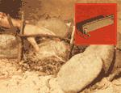
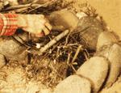
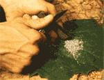
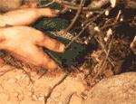
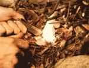
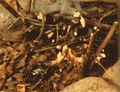

Here it is, the most efficient campfire coaxer we've ever seen...
If you've ever gone camping or backpackingespecially in inclement weather-you know what a problem it can be to get a fire going. Snow, damp wood, and the ol' North Wind always seem to work (often together!) to the hapless outdoorsman's (or outdoorswoman's) disadvantage.
Sure, there are those who claim that their Zippo never fails, or that their waxed matches can't possibly get wet in a tin container ... but nonetheless, we'd hate to count the number of campers who've been left out in the cold by such "guaranteed" fire-starting methods as these.
But now (finally!) MOTHER has discovered a "sure-fire" gadget that just can't do anything but work ... unless your kindling is drowning in water! It's called the Magnesium Fire Starting Tool, and it's manufactured by the Doan Machinery & Equipment Company, 2336 South Belvoir Boulevard, Cleveland, Ohio 44118.
This handy tool consists of a small (3/8" X 1" X 3") block of solid magnesium, with a full length flint "sparking insert" set into one long edge of the gadget. Because magnesium is relatively soft, the block can be scraped with a pocket knife to form a small pile of shavings. Then, when the same knife is used (by striking the edge of the sparking insert) to ignite the shavings, the magnesium flares up at a temperature of 5400°F ... more than hot enough to light the stubbornest campfire.
To start your blaze, first clear an area of any leaves and underbrush to a radius of three feet or more from where you're going to build your fire. Then collect some large rocks and construct a semicircle in the midst of the area you've just cleared.
Now cut yourself two forked sticks about one foot long and force them into the ground so the "forks" are six inches or so above the soil. Take another stick that's long enough to reach between the two forks and lay it in place in the "crutches" of the forked sticks (see Photo 1), then gather some preferably dry twigs and kindling (yes, damp wood will work, but it can't be soaking wet) and set it against this cross stick as shown in Photo 2. For a quick start, find yourself some dry grass or straw and place it underneath the kindling on a bed of dry leaves.
Next, take a large leaf and lay it on the ground before the campfire (if there's a wind blowing, better dig out a small depression and put the leaf in that), then hold the fire starting tool in one hand (with the flint edge in your palm and the "scraping" side up) and shave the bits of magnesium onto the leaf with a knife held so the blade is perpendicular to the surface of the tool ... as in Photo 3.
When you've scraped enough magnesium off the bar to accumulate a pile about the size of a quarter, place the shavings at the base of the campfire in the midst of the straw and dried leaf chips-as in Photo 4and then hold the tool within one inch of the magnesium slivers (at about a 45° angle, with the flint side up) and scrape the entire length of the flint sparking insert with the knife blade held perpendicularly to it (see Photo 5).
After a few strokes, the sparks generated will cause the magnesium shavings to ignite ... and in a matter of seconds, the kindling will be ablaze (Photo 6), needing only the addition of some larger fuel to make a roaring conflagration that any woodsperson. would be proud of.
The best part about the Magnesium Fire Starting Tool is that it can't be damaged by the weather ... if it gets wet, you merely dry it off and use it as if nothing had happened. And it's small enough to just slip in your pocket and forget about till you need it. Also, the tool is perfectly safe in solid bar form. Even when thrown into a campfire, the magnesium block won't ignite for about 15 minutes ... and then it'll burn with a golden glow but no explosion ... the substance must be shaved before it'll flare up easily. What more could you ask for when the wood is wet and the wind is blowin'?
EDITOR'S NOTE: The Magnesium Fire Starting Tool is available for $4.95 plus 50c postage and handling from BPS, P.O. Bar 199, Mountain Home, North Carolina 28758. Or, special arrangements can be made to receive the tool in wholesale quantities from The Survival Shop, P.O. Box 42216, Los Angeles, California 90042.
|
 1 |
 2 |
 3 |
|
 4 |
 5 |
 6 |